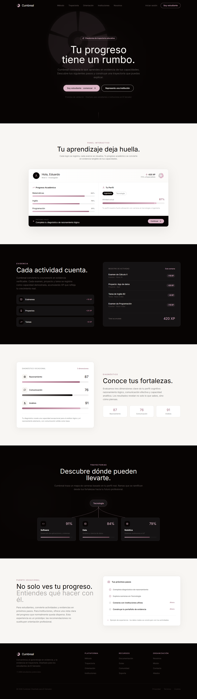
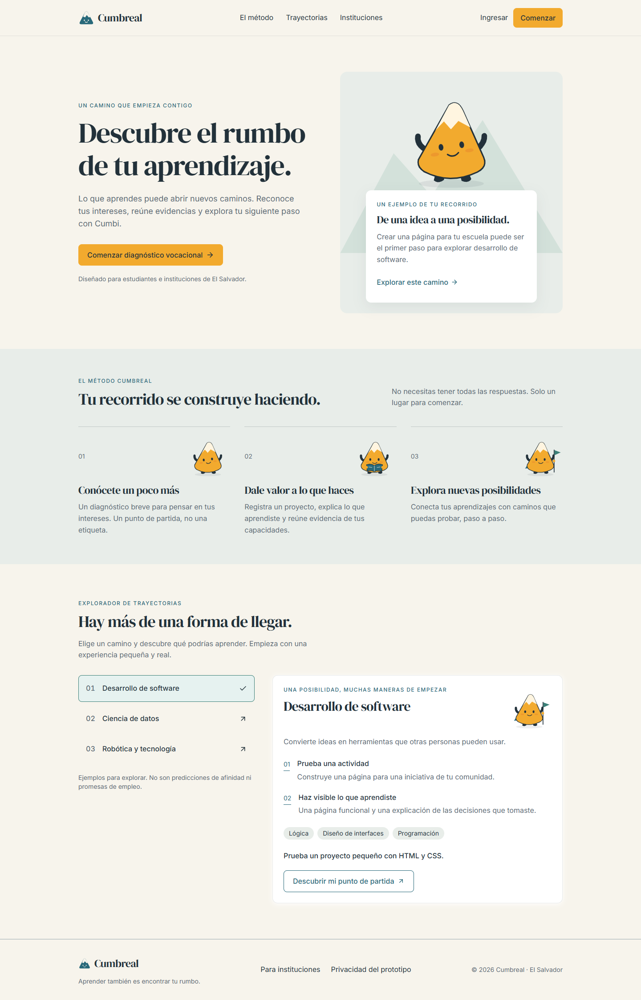

Cumbreal · Rediseño verificado · 15 de octubre de 2026
Calidad de diseño:
43 → 100
Resultado de una lista de 30 criterios de tipografía, legibilidad, diseño adaptable, interacción y coherencia visual. La evaluación corresponde al prototipo revisado; no es una certificación independiente de accesibilidad ni de seguridad.


Qué estaba dificultando la experiencia
- Textos demasiado tenues para leerlos cómodamente.
- La tipografía prevista no se estaba mostrando.
- Demasiadas secciones repetidas y animaciones de entrada.
- Formularios con etiquetas desconectadas de sus campos.
- Datos de demostración presentados como progreso personal y contadores que no coincidían.
Qué cambió
Una identidad cálida y propia
Editorial Cream & Cumbi combina el atlas de una orientadora escolar con el cuaderno de un explorador de montaña. La nueva mascota tiene cuatro poses originales. Su imagen de referencia no estaba disponible, por lo que se creó una nueva interpretación vectorial.
Tipografía y lectura
Los titulares ahora muestran la tipografía editorial elegida. El texto secundario mantiene un contraste medido y los controles tienen etiquetas visibles y foco de teclado.
Una portada que explica el recorrido
Dos secciones concretas reemplazan la secuencia repetitiva. El explorador permite elegir entre posibilidades y ver una actividad con su evidencia, sin inventar porcentajes de afinidad personal.
Progreso que corresponde a lo que haces
Los perfiles locales conservan su identidad y separan sus actividades. El diagnóstico y las evidencias actualizan un mismo contador de experiencia. Los nuevos estudiantes encuentran una invitación a empezar, no resultados académicos fabricados.
Movimiento y estados honestos
El contenido aparece inmediatamente. Cumbi celebra los logros y respeta la preferencia de movimiento reducido. Los canales todavía no conectados se explican sin simular envíos exitosos.
Qué se comprobó
23comprobaciones de interacción aprobadas
40vistas revisadas en teléfono, tableta y escritorio
0fallos en las muestras de contraste de texto
Las vistas probadas no presentaron desplazamiento horizontal, campos sin etiquetas asociadas, controles demasiado pequeños ni errores registrados por el navegador. Se comprobó el contraste de texto según los umbrales WCAG AA en las muestras, la navegación por teclado, la separación de perfiles, las contraseñas incorrectas, el progreso después de recargar y la recuperación ante datos locales dañados.
Límites conocidos
El resultado es un prototipo local funcional. Los perfiles y las evidencias se guardan en el navegador, sin sincronización entre dispositivos. Las comprobaciones locales de contraseña no sustituyen un servicio de autenticación seguro.
Google, la recuperación por correo, el contacto institucional y la revisión independiente de evidencias aún no están conectados. Las trayectorias son ejemplos educativos. No se publicó ni desplegó el sitio.